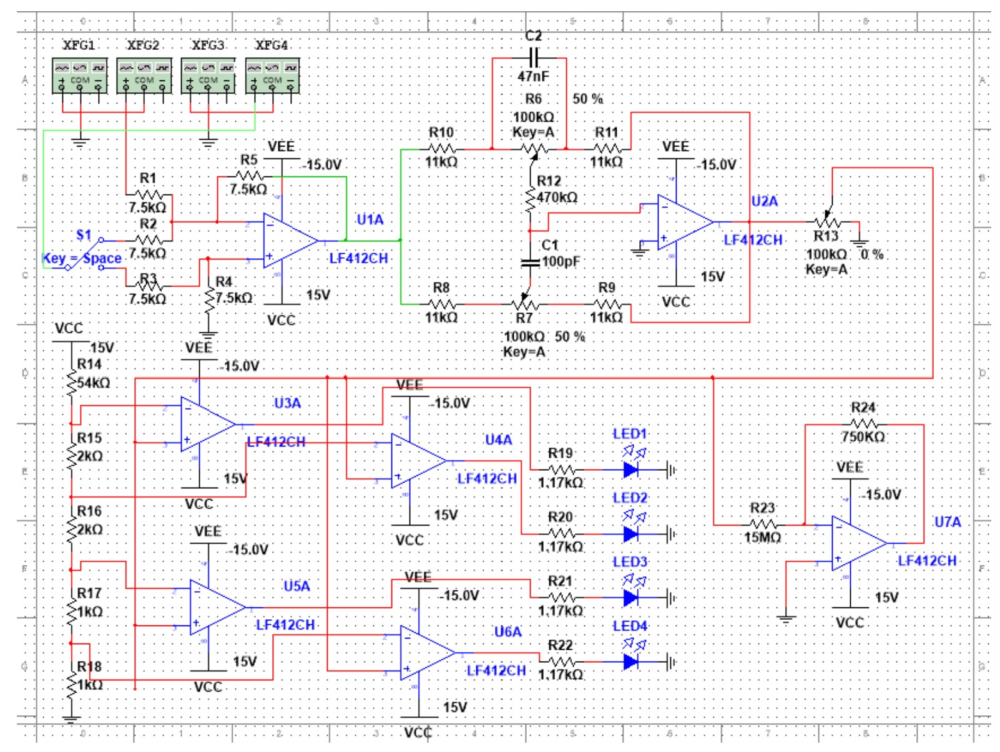

Analog Audio Signal Processing System
A sound-control / karaoke box that takes a stereo audio input and lets you mix or cancel vocals, shape bass and treble, set the volume, and watch the loudness on an LED meter, built end to end from simulation, to breadboard, to a finished PCB.


01 Overview
The system is a chain of four analog blocks, each doing one job to the audio signal. It accepts left and right channels from a 3.5 mm jack and processes them entirely in the analog domain with op-amps, passive components, and potentiometers, no microcontroller.
I designed and verified each stage in simulation first, then proved it on real hardware, which meant chasing down the differences between the ideal model and the physical circuit.
02 How I built it
-
Block 1: Mixer / Karaoke
An op-amp configured as an inverting summing amplifier to combine the channels, giving −(L+R) for mixing, or as a difference amplifier giving (L−R) for karaoke, which cancels the vocals that sit equally on both channels. An SPDT switch selects the mode, with matched 7.5 kΩ 1% resistors for unity gain.
-
Block 2: Tone control
A Baxandall bass/treble network that leans on capacitors behaving as open circuits at low frequencies and shorts at high frequencies, giving roughly a 1/10× to 10× gain range on each of bass and treble.
-
Block 3: Volume
A single potentiometer acting as a voltage divider to output a variable fraction of the signal.
-
Block 4: Amplitude display
A resistor ladder driving four LEDs that light progressively as the audio amplitude crosses 0.25 V, 0.5 V, 1 V, and 1.5 V: a simple visual loudness meter.
-
Simulation → breadboard → PCB
I modeled and tested the whole system in NI Multisim, validated it on a breadboard, then laid out and built a PCB, debugging resistor-ladder tuning and signal-attenuation issues along the way to improve stability.
03 What I learned
- Op-amp circuit design: summing, difference, and tone-shaping stages
- Analog frequency response and how capacitors set frequency boundaries
- Choosing component values to hit target gains and tolerances
- The full simulation → breadboard → PCB prototyping workflow
- Diagnosing why real hardware behaves differently from the model